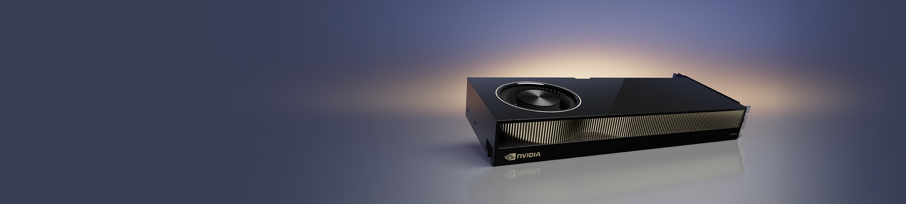
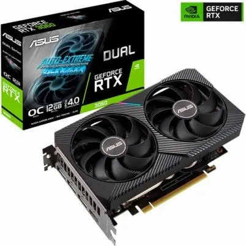
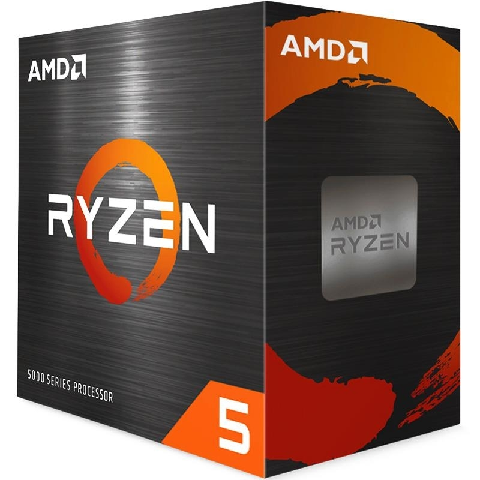
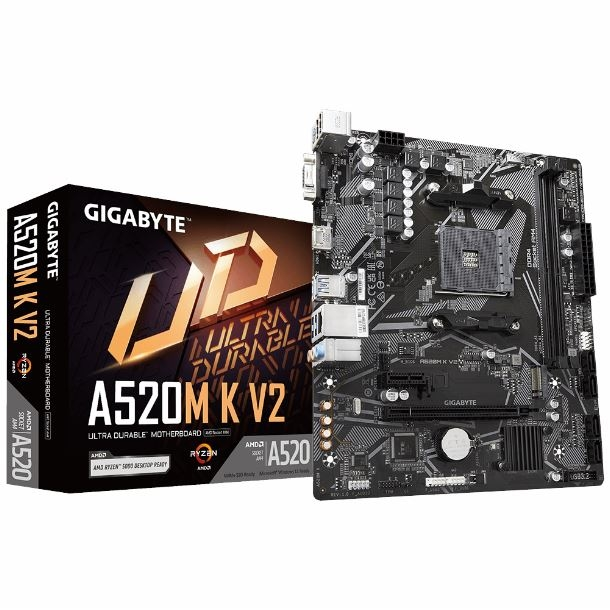
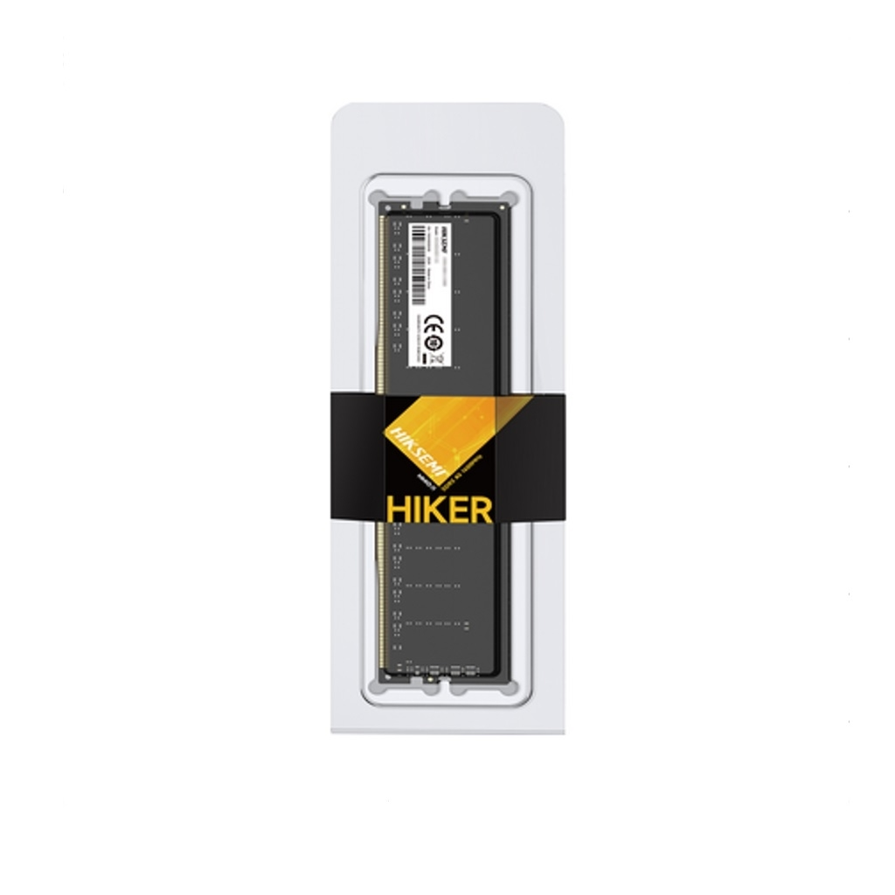
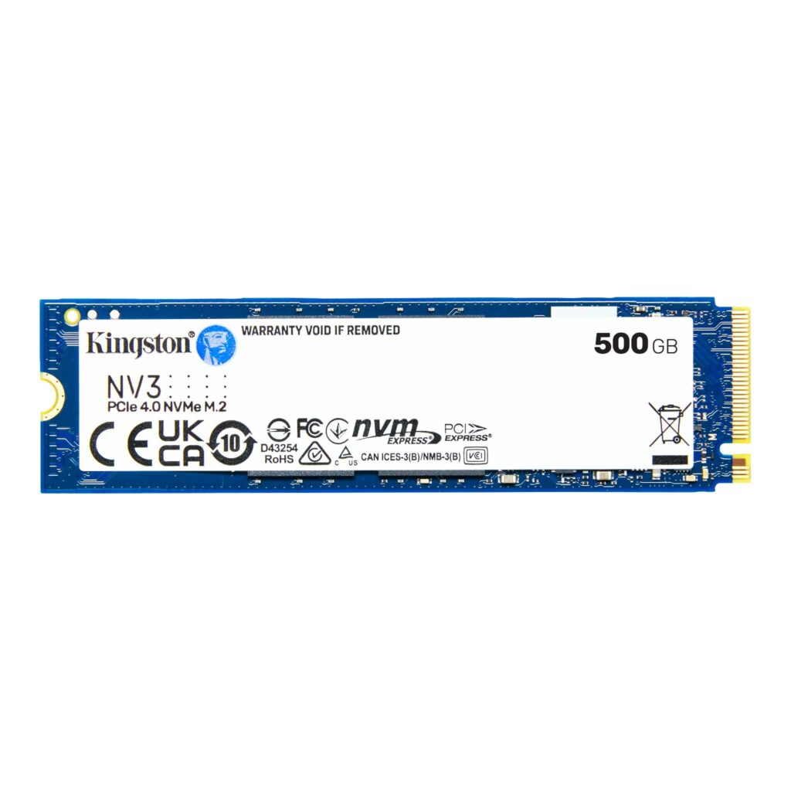
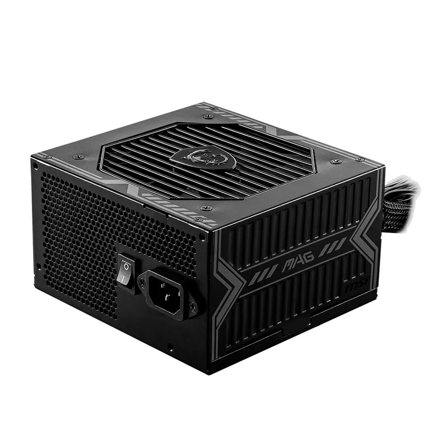
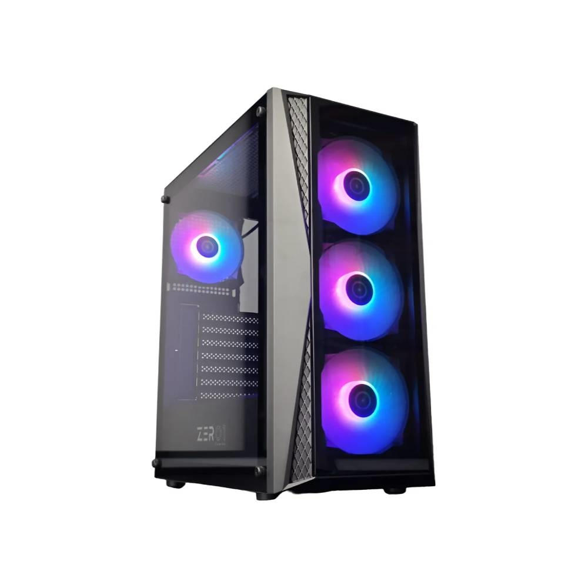

Parte 3: Dos propuestas de workstation para investigar IA
Comparo dos propuestas para el mismo perfil: una estación profesional con más recursos y una computadora doméstica para aprender. La diferencia está en la capacidad, el coste y las tareas posibles. Ninguna de las dos elimina todos los límites del hardware.
🎓 Cómo elegí los componentes
Primero definí las tareas: ejecutar modelos pequeños, preparar preguntas de prueba y guardar resultados. Después revisé la memoria necesaria y la compatibilidad del software. Para comparar una estación profesional con una computadora doméstica, utilizo un presupuesto de referencia de 1200 USD, según la aclaración del profesor durante la reunión por Zoom. La consigna escrita menciona 800 USD como referencia inicial.
El presupuesto doméstico obliga a elegir prioridades. En esta alternativa dedico la mayor parte del coste a una RTX 3060 de 12 GB. Para mantener el total cerca de 1200 USD, uso un Ryzen 5 5500, 16 GB de RAM y un NVMe de 500 GB. No presento esta computadora como equivalente a la estación profesional ni como la única combinación posible.
Prioridades y compromisos
Para acercarme al presupuesto de 1200 USD, priorizo la memoria de la GPU y acepto menos RAM y almacenamiento. Estas son decisiones para esta propuesta, no requisitos universales de la inteligencia artificial:
Qué acepto
- Ryzen 5 5500 y plataforma A520 con PCIe 3.0.
- 16 GB de RAM para empezar con modelos pequeños cuantizados y poca multitarea.
- 500 GB de SSD, con un número limitado de modelos y datasets.
Qué priorizo
- 12 GB de VRAM para disponer de más margen. Una GPU de menor memoria también puede ejecutar modelos más pequeños.
- Una fuente de modelo conocido, con potencia, conectores y protecciones adecuados.
- Un SSD NVMe por su velocidad de carga. Un SSD SATA también permite trabajar con IA local.
Configuración 1: "Money is No Object"
Estación profesional sin un límite de presupuesto fijado

NVIDIA RTX 6000 Ada: imagen del fabricante. Representa solo la GPU de la propuesta, no una computadora montada. [20]
Esta es una propuesta de diseño, no una computadora montada y probada. Antes de comprar, hay que confirmar la revisión de la placa, la versión de BIOS, la lista QVL de memoria y el espacio de los disipadores M.2.
- CPU: AMD Ryzen Threadripper PRO 7975WX (32C/64T) Más recursos para preparación de datos y tareas simultáneas[25].
- Placa madre: ASUS Pro WS WRX90E-SAGE SE Plataforma WRX90 con ocho canales de memoria y cuatro M.2[26].
- GPU: NVIDIA RTX 6000 Ada Generation (48 GB GDDR6 ECC) Más memoria para modelos cuantizados y cargas profesionales[20].
- RAM: 256 GB (8×32 GB) Kingston KSM56R46BD8-32HA ECC RDIMM Un módulo por canal; módulos DDR5 5600, objetivo de operación de hasta 5200 MT/s según CPU[25], [27].
- SSD del sistema: Crucial T700 2 TB Sistema, programas y trabajo activo[19].
- SSD de datos: 2× Corsair MP700 PRO 4 TB 8 TB totales repartidos en dos unidades[28].
- Refrigeración: Noctua NH-U14S TR5-SP6 Montaje para sTR5; altura de 165 mm[29].
- Fuente: Corsair AX1600i 1600 W Reserva para ampliaciones; capacidad superior a la necesaria para una sola GPU[30].
- Gabinete: Fractal Design Define 7 XL Compatible con placas SSI EEB y disipadores grandes[31].
Configuración 2: "El Punto Dulce"
Presupuesto Inteligente (~$1,189.95 USD en Argentina)

ASUS Dual RTX 3060 OC V2 de 12 GB: imagen de la ficha comercial de Amonpul. Representa solo la GPU seleccionada. [C2]
Diseñada para maximizar la VRAM dentro de un presupuesto estricto de ~1200 USD, priorizando una GPU nueva con garantía sobre un CPU de mayor gama[34].
| Componente | Modelo | ARS | USD | Fuente | |
|---|---|---|---|---|---|
| CPU y cooler | Ryzen 5 5500 BOX con Wraith Stealth | 173.965,90 | 111,52 | [C1] | |
| GPU nueva | ASUS Dual RTX 3060 V2 OC 12 GB | 945.678,00 | 606,20 | [C2] | |
| Placa madre | Gigabyte A520M K V2 | 88.711,06 | 56,87 | [C3] | |
| RAM | 2× Hiksemi Hiker 8 GB DDR4 3200 UDIMM | 274.466,20 | 175,94 | [C4] COMPROMISO | |
| SSD | Kingston NV3 SNV3S/500G 500 GB | 187.963,15 | 120,49 | [C5] COMPROMISO | |
| Fuente (PSU) | MSI MAG A650BN 650 W | 90.881,00 | 58,26 | [C6] | |
| Gabinete | Zer01 Orion con cuatro ventiladores | 54.657,91 | 35,04 | [C7] | |
| Subtotal | Solo componentes | 1.816.323,22 ARS | 1.164,31 USD | ||
| Reserva | Envíos y accesorios sin cotización cerrada | 40.000,00 ARS | 25,64 USD | ||
| TOTAL PREVISTO | Componentes más reserva | 1.856.323,22 ARS | 1.189,95 USD | Prioriza 12 GB de VRAM con componentes anunciados como nuevos. | |
Galería de componentes de la propuesta doméstica
Imágenes de las fichas comerciales citadas. No muestran un equipo montado. La revisión y el código de producto deben comprobarse al comprar.













Por qué la propuesta profesional usa otros componentes
Los CPU de la Parte 1 sirven para estudiar dos arquitecturas de escritorio. Para la estación profesional priorizo más memoria y más recursos para tareas simultáneas. El Threadripper PRO 7975WX ofrece 32 núcleos y 64 hilos; la plataforma WRX90 permite ocho canales de memoria. Esto puede ayudar a preparar datasets y ejecutar varios procesos, pero no demuestra una aceleración fija. [25] [26]
Los ocho módulos de 32 GB permiten distribuir 256 GB entre los ocho canales. Elijo ECC RDIMM para esta plataforma; no es la misma memoria DDR4 de la propuesta doméstica. La ficha del módulo no sustituye la lista QVL de la placa. Antes de comprar debo confirmar soporte, revisión y velocidad con los ocho módulos instalados. [27]
La RTX 6000 Ada se elige principalmente por sus 48 GB de VRAM. Ese espacio permite estudiar modelos o contextos que pueden superar una GPU doméstica de 12 GB. La ventaja principal que justifico aquí es la capacidad de memoria, no un resultado de velocidad medido por mí. [20]
Separar el SSD del sistema de los dos SSD de datos facilita la organización de modelos, datasets y resultados. Dos unidades de 4 TB suman 8 TB de capacidad nominal; no se plantea un RAID ni una copia de seguridad automática. Los SSD necesitan disipación y una copia externa de los datos importantes. [19] [28]
El Noctua tiene un montaje específico para sTR5, y el Define 7 XL admite el formato SSI EEB de la placa. La refrigeración depende también del flujo de aire y de la carga sostenida. La AX1600i aporta capacidad para ampliaciones, pero sus 1600 W no son el consumo del equipo. Hay que comprobar el montaje, los cables y todos los conectores de alimentación indicados por el manual de la placa. [26] [29] [30] [31]
Ninguna de estas dos propuestas se elige por una NPU integrada. La NPU del Intel 285K se estudia en la Parte 1 como ejemplo de otro tipo de acelerador.
📊 Comparación entre las dos propuestas
Las dos configuraciones responden al mismo perfil profesional, pero con recursos muy diferentes. La siguiente tabla resume las diferencias clave sin afirmar rendimientos no medidos:
| Criterio | Estación profesional | Configuración de estudio |
|---|---|---|
| VRAM | 48 GB | 12 GB |
| RAM | 256 GB ECC RDIMM | 16 GB DDR4 |
| Objetivo | Modelos cuantizados mayores y más tareas simultáneas | Aprendizaje con modelos pequeños y pocas tareas simultáneas |
| Límite principal | Formato, contexto y VRAM siguen importando | VRAM, RAM y capacidad del SSD |
| Rendimiento medido en este trabajo | No medido | No medido |
🔍 Por qué elegí los componentes de la alternativa
Ryzen 5 5500
El Ryzen 5 5500 tiene seis núcleos y doce hilos. Su versión BOX incluye un Wraith Stealth. Utiliza AM4, DDR4 y PCIe 3.0. No tiene gráficos integrados, por lo que el monitor debe conectarse a la tarjeta gráfica. Estas características permiten reducir el coste, aunque la plataforma ofrece menos margen que una estación moderna de gama alta[33].
ASUS Dual RTX 3060 V2 OC 12 GB
La ASUS Dual RTX 3060 V2 OC elegida tiene 12 GB GDDR6 y un conector de alimentación de ocho pines. ASUS indica una fuente recomendada de 650 W para su escenario de referencia, que incluye overclock. Elijo la MSI MAG A650BN de 650 W para respetar esa recomendación y disponer de margen. Esta potencia es la capacidad de la fuente, no el consumo medido del equipo[34], [37].
Los 12 GB de VRAM ofrecen más margen que una tarjeta de 8 GB. El objetivo principal son modelos de 7B–8B cuantizados y pruebas de tamaño moderado. Algunas versiones de 13B a 4 bits también pueden ser posibles, pero dependen del contexto, del programa y de la memoria adicional. No prometo que cualquier modelo de 13B funcione ni una velocidad fija de generación.
Gigabyte A520M K V2
La placa A520M K V2 tiene dos ranuras de RAM. Con dos módulos de 8 GB se utiliza doble canal, pero una ampliación a 32 GB requiere sustituir los módulos. Su ranura principal para GPU es PCIe 3.0 x16 y su único M.2 trabaja hasta PCIe 3.0 x4. Aunque la GPU y el SSD admiten PCIe 4.0, en esta plataforma usarán PCIe 3.0. Hay que confirmar la revisión recibida y su soporte de CPU[35], [36].
Kingston NV3 SNV3S/500G 500 GB
El Kingston NV3 elegido es el modelo SNV3S/500G de 500 GB y formato M.2 2280. Kingston declara hasta 5000 MB/s de lectura y 3000 MB/s de escritura en una plataforma PCIe 4.0 adecuada. La combinación Ryzen 5 5500 y A520 limita el enlace a PCIe 3.0 x4, por lo que no atribuyo a esta computadora una lectura real de 5000 MB/s. Los 500 GB también obligan a controlar el número de modelos guardados[38].
Zer01 Orion con cuatro ventiladores
El gabinete y sus cuatro ventiladores se describen según la ficha del vendedor. No dispongo de una ficha técnica oficial independiente para verificar todos sus detalles. Antes del montaje hay que confirmar espacio, tornillos, conectores y control de ventiladores. La tarjeta ASUS mide 200 mm de largo según su fabricante[34], [C7].
Para este presupuesto considero Linux sin coste de licencia y conexión por Ethernet. La propuesta no incluye un adaptador Wi-Fi ni un servicio de instalación. Windows Studio Effects es un ejemplo de la sección de NPU; no se atribuye a esta computadora con Ryzen 5 5500.
La placa tiene un conector para el ventilador de CPU y otro para el sistema. Antes de conectar cuatro ventiladores hay que comprobar sus conectores, el controlador o distribuidor necesario y sus límites eléctricos. La reserva de la tabla no equivale a una lista de accesorios ya cotizada. [35]
Diagrama de Bloques Esquemático (Conexiones de la Build ~$1,190)
Representación visual de la interconexión física y de buses de datos de la configuración de presupuesto inteligente. Nota: Esta configuración utiliza PCIe 3.0.


Esquemas de la propuesta con Ryzen 5 5500. El azul representa datos y el amarillo alimentación. Son conexiones funcionales, no un plano de montaje. La placa también suministra parte de la alimentación de la GPU a través de la ranura PCIe. El SSD recibe energía del conector M.2 y no necesita un cable SATA. Los ventiladores del gabinete requieren comprobar conectores y controlador. [34] [35] [37] [38]
Posibles mejoras
La primera mejora depende del problema observado:
- Si hay paginación o demasiada multitarea: puedo sustituir los módulos por 2×16 GB.
- Si falta espacio: puedo sustituir el NVMe por uno mayor o añadir una unidad SATA: el único conector M.2 ya está ocupado.
- Si necesito más VRAM: debo estudiar otra GPU y revisar fuente, espacio y presupuesto.
No fijo precios futuros porque no los conozco.
Infografía Final: Capacidades Clave de la Workstation de ~$1,189.95 USD
Resumen de las prioridades y los límites de esta propuesta doméstica.
12 GB VRAM
Objetivo: modelos de 7B–8B cuantizados. El contexto y la memoria adicional pueden causar errores por falta de memoria (OOM).
Compra nueva
Las fichas corresponden a productos nuevos. Hay que confirmar factura, plazo y condiciones de garantía de cada vendedor.
16 GB RAM DDR4
Punto de partida para estudiar. La RAM disponible depende del sistema, el modelo y los programas abiertos.
NVMe 500 GB
Kingston NV3 SNV3S/500G. Velocidad limitada a PCIe 3.0 x4 por la plataforma. Permite guardar el sistema y una selección limitada de modelos; hay que controlar el espacio libre.
$1,189.95 USD previsto
Incluye reserva de 40.000 ARS. La entrega aún no tiene una cotización cerrada. Precio por transferencia con impuestos.